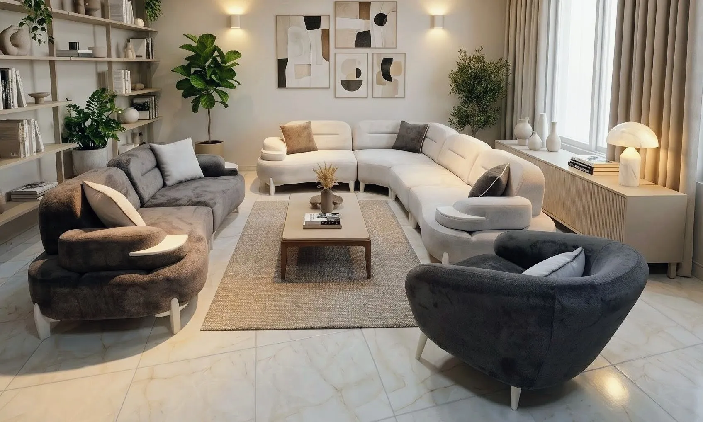
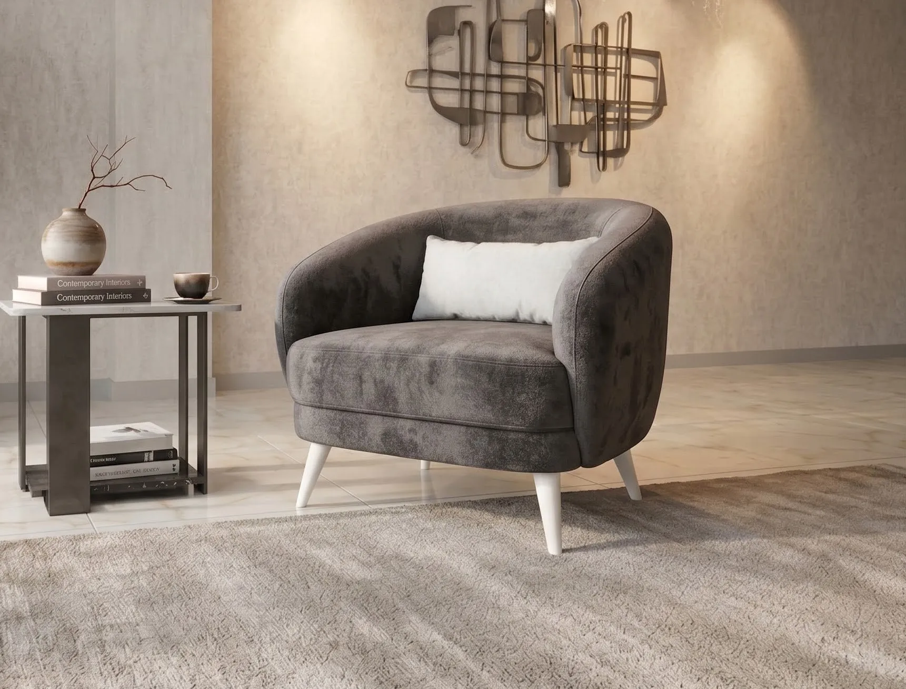

SINCE 1986
SEDİRKON
PREMİUM MOBİLYA KOLEKSİYONU
Doğadan İlham Aldı. İnsan İçin Tasarlandı.

PREMİUM MOBİLYA KOLEKSİYONU
Modern yaşam alanlarını doğanın organik formları ve kaliteli işçilikle buluşturan Sedirkon
2026 koleksiyonuna hoş geldiniz.
Welcome to the
Sedirkon 2026 collection, bringing together modern living spaces with nature's organic
forms and quality craftsmanship.
Yumuşak dokular ve organik ahşap formların huzur veren buluşması. Birinci sınıf gürgen detayları ve dokulu keten döşemesiyle hazırlanan uyumlu modern yerleşim.


Sıcaklık ve klasik zarafetin modern konforla yeniden yorumlanması. Derin oturum alanı ve peluş sırt minderleriyle üstün rahatlık arayanlar için tasarlandı.


Zarif altın detaylar ve lüks dokularla sofistike bir duruş. Metalik altın çerçeveler ve ince bukle kumaş kombinasyonuyla evinizde prestijli bir atmosfer.


Nordik minimalizmin cesur renk paletleriyle füzyonu. Bordo ve kremin cesur karışımı, masif gürgen ayaklar ve cam detaylarla mükemmel bir denge sağladı.


Modern hatların ve geniş oturum alanlarının ustaca birleşimi. Aile boyu konfor için tasarlanan ekstra geniş yapısı ve fonksiyonel özellikleriyle yaşam alanınızın yeni odak noktası.


Zamansız kadifenin modern hatlarla buluştuğu Göksu serisi, konforu en şık haliyle sunuyor. Pastel tonlar ve rafine detayların mükemmel dengesi.


Organik formların ve yumuşak geçişlerin mükemmel uyumu. Her detayda hissedilen sıcaklık.


Şehirli yaşamın enerjisini yansıtan dinamik bir tasarım. Geniş oturum alanı ve modüler yapısıyla fonksiyonelliği ön plana çıkaran modern bir yaklaşım.


Sıcaklık ve lüksün modern formda yeniden doğuşu. Yenilenen detaylar ve güçlendirilmiş oturum ile eşsiz bir konfor deneyimi.


Organik kıvrımları ve ekstra derin oturum alanıyla (110cm) bulutların üzerinde hissettiren eşsiz bir deneyim. Troya kumaşın yumuşak dokusuyla modern yaşam alanlarında zarif bir sığınak.


Organik kıvrımları ve ekstra geniş oturum alanıyla bulutların üzerinde hissettiren köşe takımı konforu. Troya kumaşın yumuşak dokusuyla kalabalık aileler için zarif bir sığınak.


Modern ve rafine dokunuşlarla yenilenen Suna Köşe V2, organik kıvrımları ve üstün konforu bir arada sunuyor. Yaşam alanlarınıza ferahlık ve şıklık katan yeni nesil tasarım.
Suna Köşe V2, renewed with modern and refined touches, offers organic curves and superior comfort together. A next-generation design that adds spaciousness and elegance to your living spaces.


Modern ve estetik hatların zarafetle buluştuğu Esinti serisi. Yaşam alanlarınıza ferahlık ve konfor katmak için özenle tasarlandı.
Geleceğin Klasikleri
Classics of the Future
İletişim
+90 543 940 2778
+90 554 405 8489
sedir@sedirkon.com
www.sedirkon.com.tr
 Konum İçin Okutun
Konum İçin Okutun